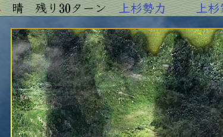

戦争画面の「残りターンが変更」するタイミングで呼び出されるイベントハンドラとなります。
プログラム上のターン数値上が変更された直後、
画面上のターン数値が変更される前、
天気が更新される前、
という非常に早いタイミングとなります。

部隊のユニット情報などはこのタイミングですでに最新情報です。
しかし、画面上に表示されている残りターン数や、
SDKで提供している「天気関連の情報」に関しては、
このイベントハンドラが呼ばれた後に更新されます。
よってこのイベントハンドラ内では、「１つ前のターンの天気の情報」となりますので
注意してください。
このイベントハンドラは、戦争のコントロールの中核的なイベントハンドラとなります。
又、このイベントハンドラが呼びされるタイミングは、「ダイアログ」などを表示しても
安全なタイミングであることが保証されています。
まずは、このイベントハンドラがどのような時に呼ばれるのか、
確認しましょう。
ターンが変わる度に、出陣中の武将(今表示されている画面外に居る武将も含む)に
何か処理を施すといったことはよくあることです。
「My_戦争_残りターン変更時」イベントハンドラについて、主な解説は以上となります。